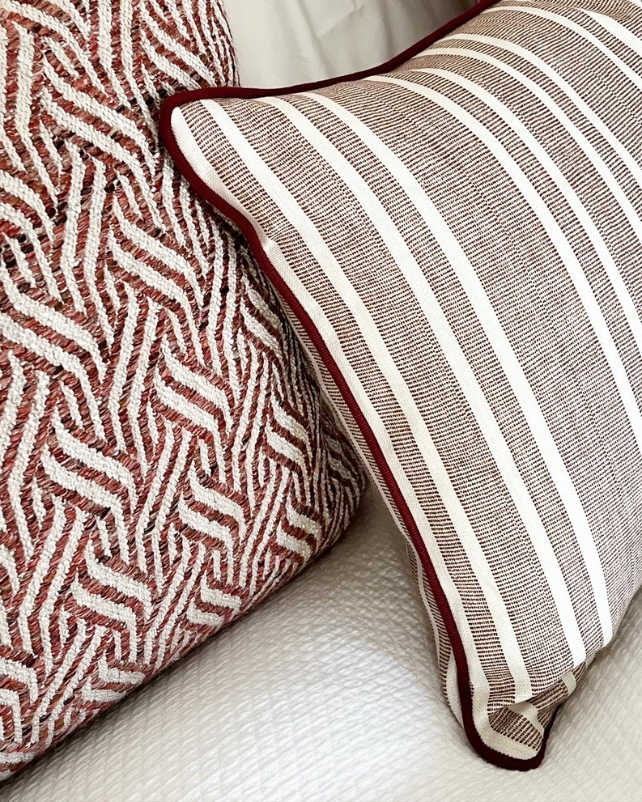

Kristina Lifors
My first introduction to architecture and design was looking over my parents shoulders when they were planning our home in Naples, Florida in the early nineties. I loved being involved in the process of thinking about different layouts and how the furniture could work in each room.
Despite my early interest in design I went on to study Marketing at the University of Rhode Island. After graduation I packed up my car and drove down to New York City and started looking for work.
After a lot of calls and knocking on doors I finally ended up at the interior design office of Brian J. McCarthy Inc. where I was initially brought on the team as assistant to one of the senior designers.
One year later I was working hand in hand with Brian McCarthy on some of the firms most prestigious projects which included large apartments in Manhattan, summer retreats in the Hamptons, and a private home in the hills of Bel Air, California.

After 9 years in New York I moved back to Stockholm, Sweden and opened my own boutique design firm, specializing in turn key projects for residential clients.